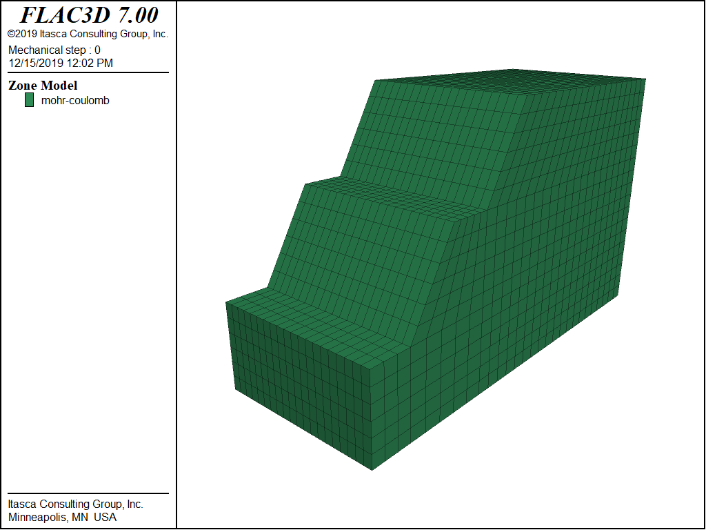
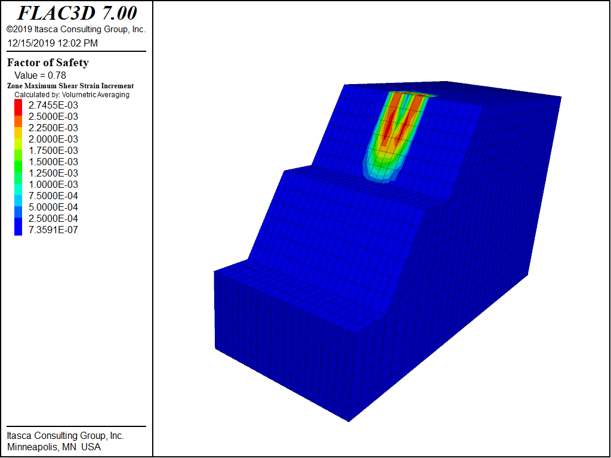
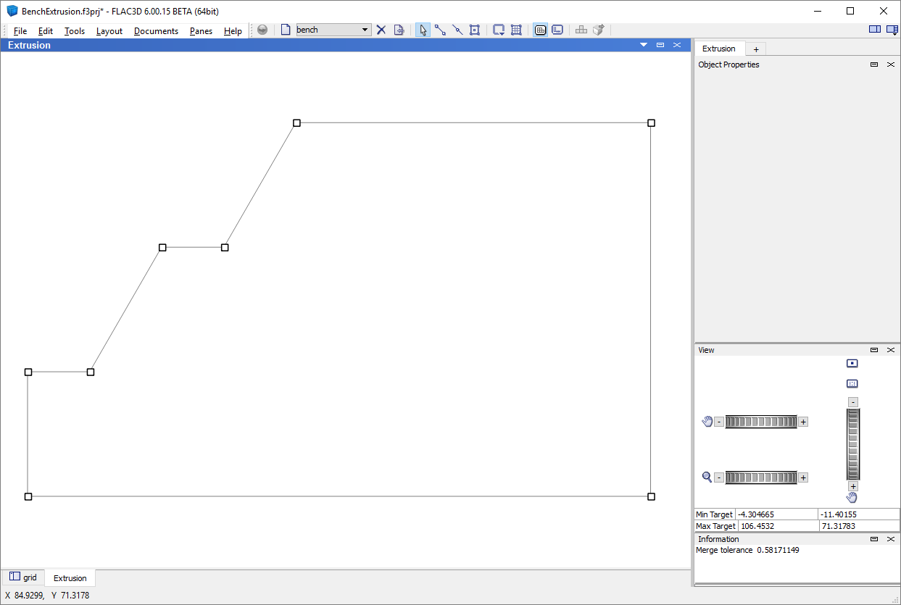
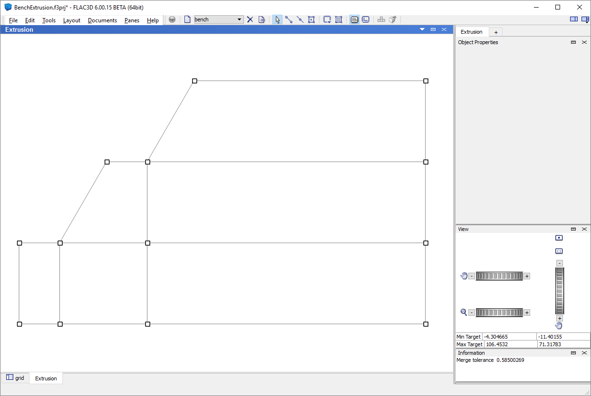
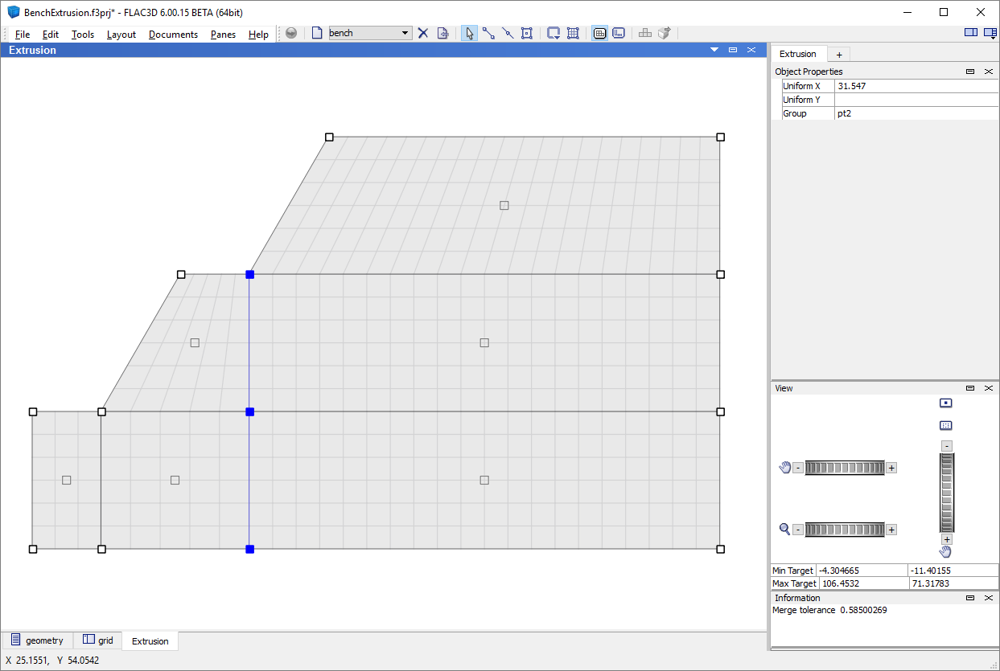
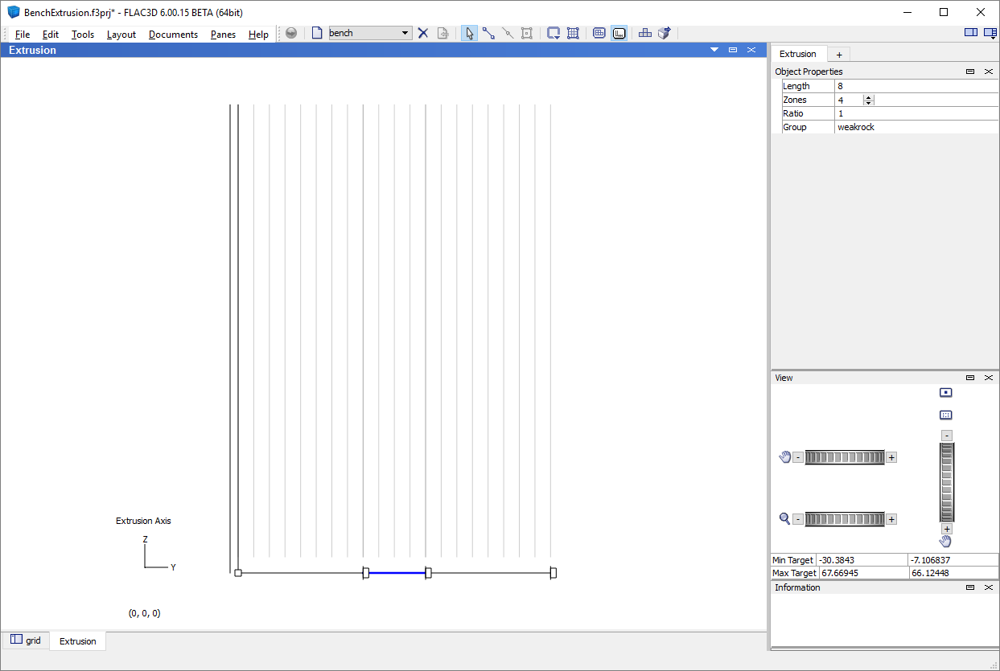
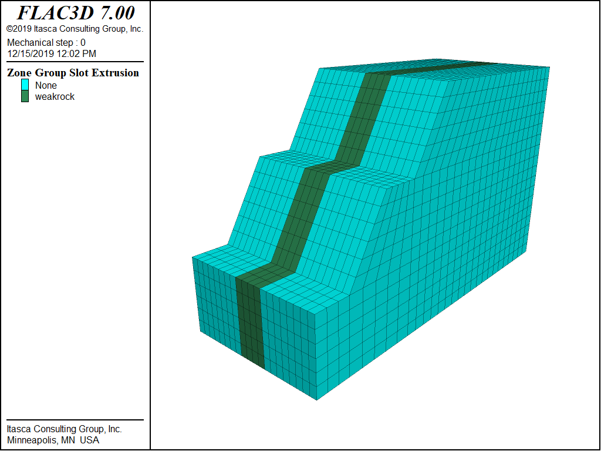
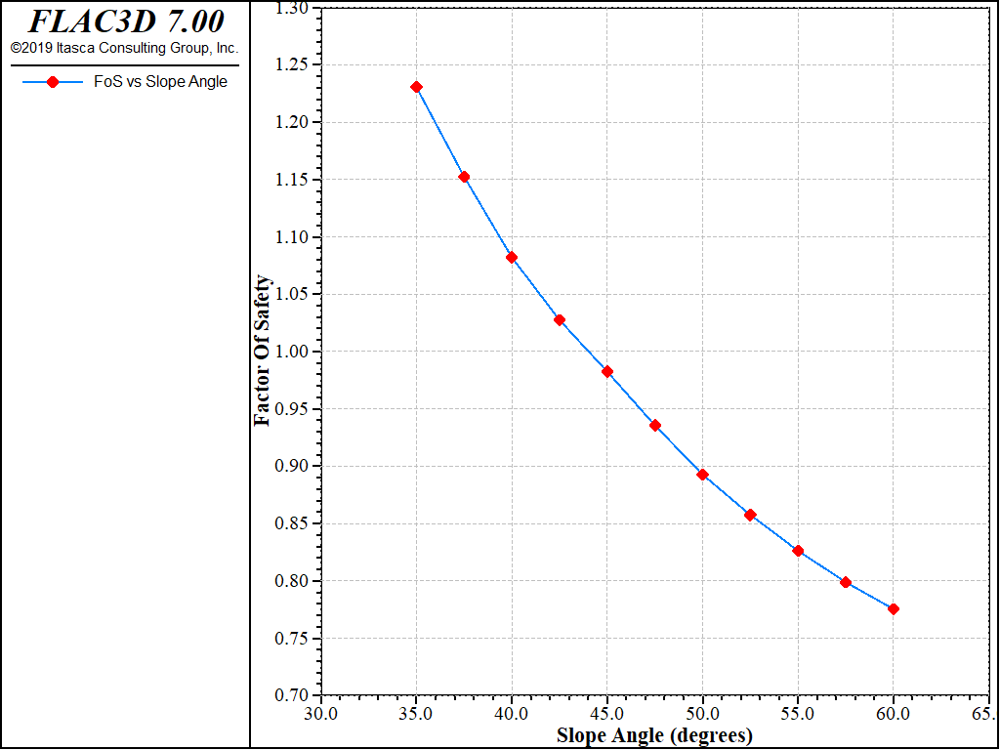
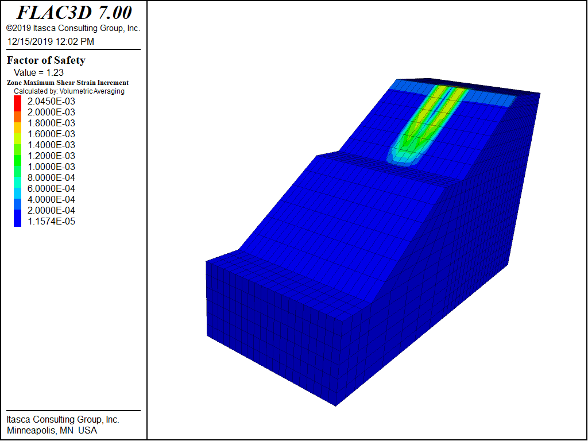

稳定露天矿边坡角的自动计算
问题描述
注意
要在 FLAC3D 中查看此工程，请使用菜单命令 。选择“TheoryAndBackground/FactorOfSafety/ BenchExtrusion”，再选择“BenchExtrusion.f3dprj”即可加载。该工程的主数据文件（main data files）在本示例末尾给出。
在含有 8 m 厚软弱岩体竖直带的坚硬岩体中开挖一个露天矿边坡。该边坡由两个高 20 m 的台阶组成，中间设有宽 10 m 的马道。两个台阶最初均与水平面成 60° 倾角。图 1（Figure 1） 给出了初始边坡形态以及软弱岩体在坚硬岩体中的位置。
坚硬岩体和软弱岩体的强度由 Mohr-Coulomb 材料模型给定。坚硬岩体的黏聚力为 15 kPa、摩擦角为 40°，软弱岩体的黏聚力为 7 kPa、摩擦角为 120°。两种岩石的抗拉强度均取零，质量密度为 2000 kg/m3，体积模量为 10 GPa，剪切模量为 3 GPa。


图 1：含软弱竖直带的岩体中的台阶边坡。
针对这些边坡条件进行的安全系数计算表明边坡是不稳定的。计算得到的系数为 0.81，且破坏（如图 2（Figure 2） 所示）主要穿过上台阶中的软弱岩体。


图 2：台阶倾角为 60° 时边坡的安全系数与破坏面（以剪应变云图表示）。
本练习的目的是确定使上、下台阶形成安全系数为 1.2 的稳定边坡条件的坡角。该分析通过以增量方式调整坡角自动进行，直至达到 1.2 的系数。模型使用 FLAC3D 中的 Extrusion 窗格创建，并利用 FISH 函数自动调整坡角，以便针对每个坡角计算安全系数。进行一系列计算，直至系数达到 1.2。
图 3（Figure 3） 给出了最初在 Extrusion 窗格构建视图中绘制的边坡边界。模型底部宽度为 100 m，模型高度为 60 m。在草图中添加了额外的边线，将边坡形状划分为四边形块体，以便为该模型创建结构化网格。见图 4（Figure 4）。
在构建视图中，通过在 Autozone 对话框中指定模型范围为 30 个网格单元来定义网格划分。构建视图中的所有块体均赋予分组名“strongrock”。
选定的网格点也被赋予分组名。随后可移动这些网格点，以对应于在 FISH 函数中执行的坡角变化。下台阶上方马道前缘的网格点赋予分组名“pt1”。马道后缘的网格点以及该网格点下方的两个网格点赋予分组名“pt2”。（该赋值见图 5（Figure 5）。）上台阶顶部的网格点赋予分组名“pt3”。


图 3：Extrusion 窗格中的台阶边坡边界草图。


图 4：用于将边坡形状划分为块体的附加边线。


图 5：在构建视图中为选定网格点赋予分组名“pt2”。
在挤出视图中将模型深度设为 40 m。同时设定 8 m 宽软弱岩体的范围，该区域内的网格单元赋予分组名“weakrock”。见图 6（Figure 6）。


图 6：在挤出视图中为网格单元赋予分组名“weakrock”。
挤出后的模型见图 7（Figure 7）。对于本示例性算例，该模型的网格相对较粗。返回 Extrusion 窗格即可轻松修改网格划分。该挤出模型的输入记录从 FLAC3D 的状态记录窗格保存。该记录命名为“benchextude.dat”。


图 7：含软弱竖直带的岩体中台阶边坡的 FLAC3D 模型。
文件“benchAdjust.dat”中名为 台阶调整（benchAdjust） 的 FISH 函数用于在台阶坡角由 60° 减小时移动分组名为“pt1”“pt2”和“pt3”的网格点。每次减小角度时，扫描模型中的挤出点，并调整属于这些分组的点的 x 坐标位置。
针对每一次坡角变化计算安全系数。每次减小角度时（使用 单元生成从挤出器（zone generate from-extruder） 命令）都会创建新网格，赋予材料性质和边界条件，并进行安全系数计算。为每个角度创建模型的命令包含在“benchFOS.dat”中。
不能在 FISH 的 command/end_command 语句内部启动安全系数计算，因为该命令会恢复初始模型状态，而该状态包含 FISH。为绕过该限制，使用 FISH 创建一个数据文件，分别计算每个坡角的安全系数并将结果存储到表格中。
当坡角由 60° 减小到 35° 时，共进行 11 次安全系数计算。计算过程中可显示安全系数值随坡角变化的表格图，以监测坡角对安全系数的影响。计算完成时的表格图见图 8（Figure 8）。由该表可知，临界边坡（安全系数为 1.0 时的边坡）约为 43.5°。


图 8：安全系数随坡角的变化。
在最终 35° 倾角时，安全系数为 1.23。对于该边坡几何，破坏面也局限于上台阶，如图 9（Figure 9） 所示。图 8（Figure 8） 中的表格图表明，坡角为 36° 时达到 1.2 的系数。
可方便地扩展“benchAdjust.dat”中的 FISH 函数，使其能够独立调整上、下台阶的坡角以及台阶（马道）宽度。随后可进行更多计算，以评价这些变量变化对安全系数的影响。（请注意，本示例性练习中未改变模型边界，这限制了坡角的减小范围。）


图 9：台阶倾角为 35° 时边坡的安全系数与破坏面。
数据文件
enchExtrusion.dat
model new
; 在二维拉伸工具中创建，并从状态窗格导出
program call 'geometry' suppress
program call 'benchAdjust' suppress ; 修改坡度的 FISH 函数
model large-strain off
; 此 FISH 函数创建数据文件，用于计算
; 一系列坡角下的安全系数
fish define createDataFile(startang,endang,increment)
local test = list
loop local angle (startang,endang,increment)
test('end','end') = list.seq('; Angle '+string(angle), ...
'[benchAdjust('+string(angle)+')]', ...
'program call \'benchFOS\' suppress', ...
'model factor-of-safety ratio-local 1e-3 ... ', ...
'filename \'BenchSlope'+string(angle)+'\' ; '+string(angle), ...
'table \'fos\' insert ('+string(angle)+',[global.fos])' )
endloop
file.all('benchrun.dat','text') = test
end
[createDataFile(35,60,2.5)]
program call 'benchrun'
table 'fos' export 'fos-angle' truncate
program system 'del benchrun.dat'
benchAdjust.dat
; 根据坡角变化平移网格点
fish define benchAdjust(theta)
; 计算点的新位置
local xa = 10 + 20 / math.tan(theta*math.degrad)
local xb = xa + 10
local xc = xb + 20 / math.tan(theta*math.degrad)
; 更新标记为 pt1、pt2 和 pt3 的点的 x 坐标
local allpts = list(extrude.point.list(extrude.set.find('bench')))
local pts1 = allpts(extrude.point.isgroup(::allpts,'pt1'))
local pts2 = allpts(extrude.point.isgroup(::allpts,'pt2'))
local pts3 = allpts(extrude.point.isgroup(::allpts,'pt3'))
extrude.point.pos(::pts1)->x = xa
extrude.point.pos(::pts2)->x = xb
extrude.point.pos(::pts3)->x = xc
end
[benchAdjust(35)]
benchFOS.dat
;-------------------------------------------------------------
; 根据当前拉伸工具数据进行一次安全系数计算
;-------------------------------------------------------------
; 清除所有旧网格单元
zone delete
; 由拉伸工具数据生成网格单元
zone generate from-extruder
; 分配本构模型和属性
zone cmodel assign mohr-coulomb
zone property density 2000 bulk 1e10 shear 3e9
zone property cohesion 15000 friction 40
zone property cohesion 7000 friction 20 range group 'weakrock'
; 指定边界条件
zone face apply velocity-normal 0 range union position-x 0 position-x 100
zone face apply velocity-normal 0 range union position-y 0 position-y 40
zone face apply velocity (0,0,0) range position-z 0
model gravity 10
| 这些内容对您有帮助吗？… | FLAC3D © 2019, Itasca | 原文更新于 2020 年 10 月 8 日 |
| 版权与免责声明 | ||